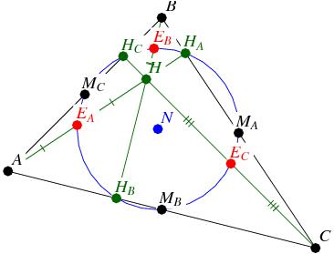

九點圓 (Nine point circle)
程式編寫日期: 2011年12月29日
已知三角形三頂點座標，程式會計算九點圓的九點，如下圖所以示，程式會順序顯示三角形三邊的中點MA、MB及MC，三高的垂足HA、HB及HC，和頂點至垂心三條線段的中點EA、EB及EC。

程式需要在 REG Lin 模式下執行，因此在選擇新程式位置後，按 5 1 選用REG Lin模式。
注意: 藍色的英文字為統計模式中的變數(n 按 shift 1 3 ，maxX 按 shift 2 2 2，maxY 按 shift 2 2 → 2)，FreqOn 按 Shift MODE ← ← 1。
程式 (281 bytes)
FreqOn: ?→A: ?→B: ?→C: ?→D: ?→X: ?→Y:
X , Y ; . 5 DT: n(C + X◢ n(D + Y◢
n (A + X◢ n(B + Y◢ n(A + C◢ n(B + D◢
Pol( C-X , D-Y: sin( Y )(B - D) - cos( Y )(C - A→X:
C + X cos( Y◢ D + X sin( Y◢
Pol( A - maxX , B - maxY: sin( Y )(D - B) - cos( Y )(A - C→X:
A + X cos( Y◢ B + X sin( Y◢
Pol( A-C, B-D: sin( Y )(maxY - B) - cos( Y )(A - maxX→X:
A + X cos( Y◢ B + X sin( Y◢ Y→M: Pol( A - maxX , B - maxY:
( sin( M )(maxY - D) - cos( M )(C - maxX) )÷sin( Y-M→X:
C + X sin( Y→M: D - X cos( Y→Y:
n(A + M◢ n(B + Y◢ n (C + M◢
n(D + Y◢ n(maxX + M◢ n(maxY + Y
例題: A、B及C三點的坐標分別為(0 , 18)、(-6 , 0) 及 (12, 0)，求九點圓九點座標。
按 Prog 1 再按 0 EXE 18 EXE -6 EXE 0 EXE 12 EXE 0 EXE (顯示3) EXE (顯示 0，即MA=(3, 0))
EXE (顯示6) EXE (顯示 9，即MB=(6, 9))
EXE (顯示-3) EXE (顯示 9，即MC=(-3, 9))
EXE (顯示0) EXE (顯示 0，即HA=(0, 0))
EXE (顯示6.46154) EXE (顯示 8.30769，即HB=(6.46154, 8.30769))
EXE (顯示 - 4.2) EXE (顯示 5.4，即HC=(- 4.2, 5.4))
EXE (顯示0) EXE (顯示 11，即EA=(0, 11))
EXE (顯示 - 3) EXE (顯示 2，即EB=(- 3, 2))
EXE (顯示6) EXE (顯示 2，即EC=(6, 2))
參考資料:
http://en.wikipedia.org/wiki/Nine-point_circle
http://www.gogeometry.com/center/nine_point_center_euler.html
返回 CASIO fx-50FH、fx-3650P II、fx-50FH II及fx-50F PLUS 程式集